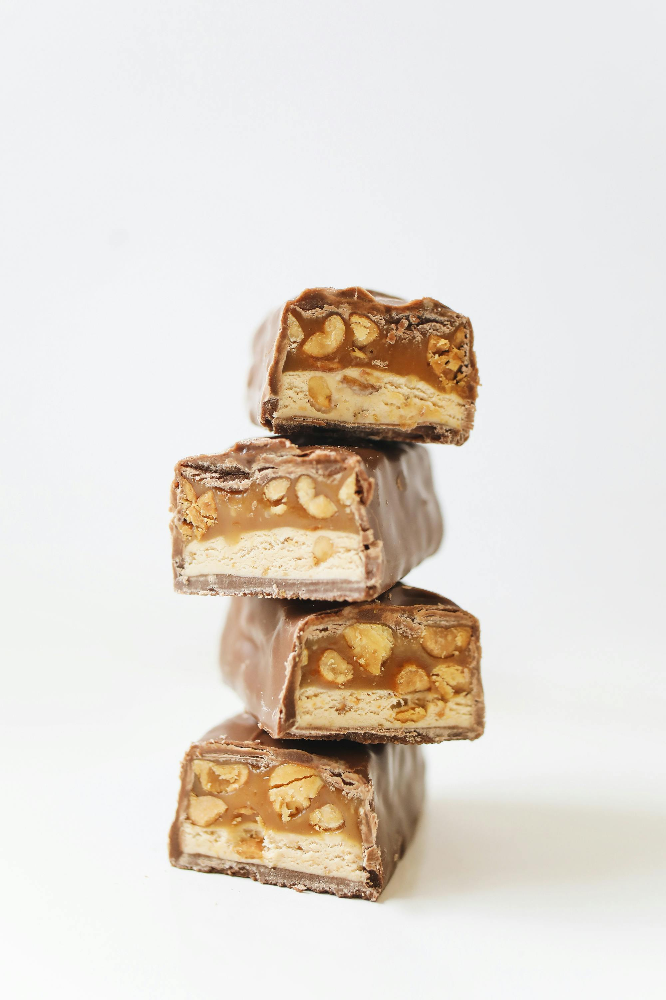

Description
Rich, chewy, and irresistibly nutty, these peanut butter bars are the perfect treat for any occasion. Made with a smooth peanut butter base, layered with a touch of sweetness, and topped with a decadent chocolate glaze, they strike the ideal balance between salty and sweet. Easy to prepare and even easier to enjoy, these bars are a crowd-pleaser—whether served as a quick snack, a lunchbox surprise, or a delightful dessert.
Ingredients
- 2 cups graham cracker crumbs
- 2 cups confectioners' sugar
- 1 cup butter or margarine, melted
- 1 cup peanut butter
- 1 ½ cups semisweet chocolate chips
- 4 tablespoons peanut butter
Steps
- Gather all ingredients.
- Mix together graham cracker crumbs, confectioners' sugar, butter or margarine, and 1 cup peanut butter in a medium bowl until well-blended.
- Press evenly into the bottom of an ungreased 9x13-inch pan.
- Place chocolate chips and 4 tablespoons peanut butter in a microwave-safe bowl. Microwave on high, stirring every 15 seconds, until smooth.
- Spread mixture over crust.
- Refrigerate for at least 1 hour before cutting into 12 squares.
Home